일상을 그림으로 바꾸는 30초,
Draw Diary
그림일기로 나의 하루를 가볍게,
그리고 따뜻하게 기록해요.
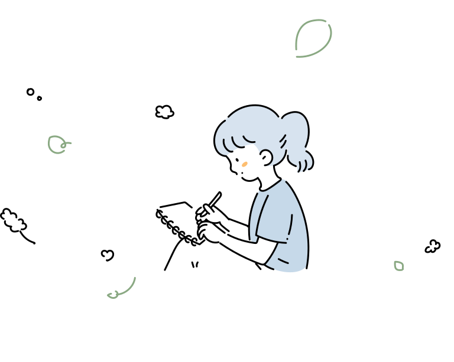
우리는 일기를 쓰고 싶어도,
쉽게 지쳐버립니다.
그럼 누군가 내 하루를 대신 기록해주고,
그 속 감정까지 알려준다면 어떨까요?
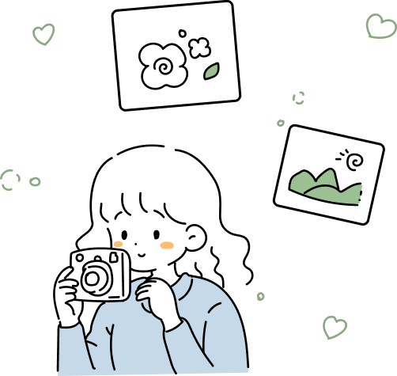
더 이상 긴 글을 써야 한다는 부담도,
무슨 말을 적어야 할지 막막해 할 필요도 없습니다.
텍스트 대신 감정을 담은 그림으로,
당신의 하루를 더 자연스럽게 기록해보세요.
하루 30초면 평범한 일상도
감각적인 장면이 되고,
SNS에 공유하고 싶어지는
하나의 작품으로 완성됩니다.
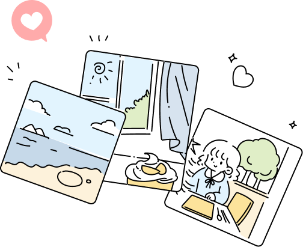

Experience
오늘 하루 잘 보내셨나요?
직접 앱을 켜서 그림일기를 만들어보세요.
장소 선택
오늘의 장소를 선택해보세요.
활동 선택
해당 장소에서 한 활동을 골라보세요.
감정 선택
무슨 감정이 들었는지 알려주세요.
한 줄 기록
오늘의 일기를 한 줄 적어주세요.
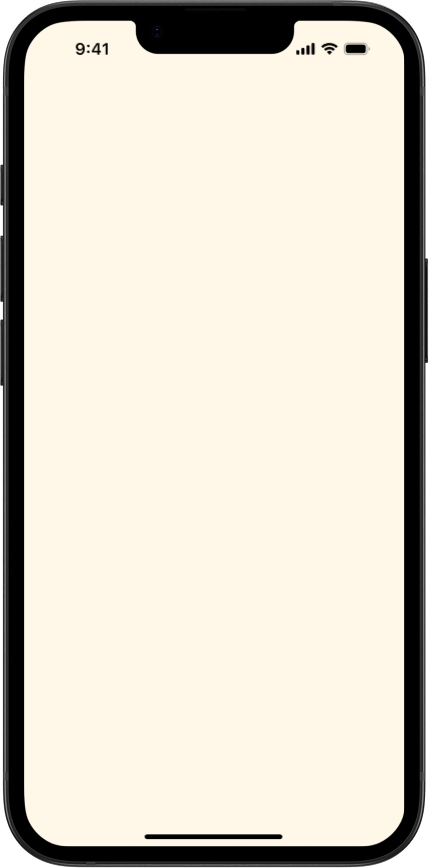
Overview
빠른 시대 속에서 사람들은 오히려
진짜 위로와 감정에 집중하기 시작했습니다.
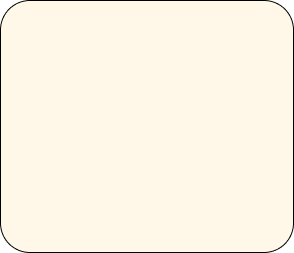
건강에 대한 정보,
지식을 데이터로
관리하고 분석하는
지능도 중요하죠.
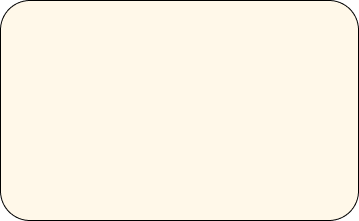
혼자 살지만 함께, 함께
있으면서도 독립적인 형태의
가구가 흥하고 있어요.
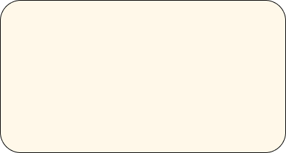
준비는 곧 생존력! 불안한 시대
속에서 나에게 도움이 될 만한 것
을 준비해야 하는 현대 사회예요.
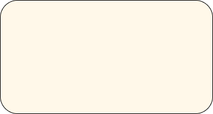
기분이 곧 소비의 기준이
자, 만족감이 합리성을
이기는 시대가 찾아왔어요.
사람들은 여전히,
감정을 기반으로 살아가고 있어요.
Insight
우리는 바쁜 일상 속 부담 없이 하루의 감정과
경험을 남길 수 있는 가벼운 기록 방식을 원해요.
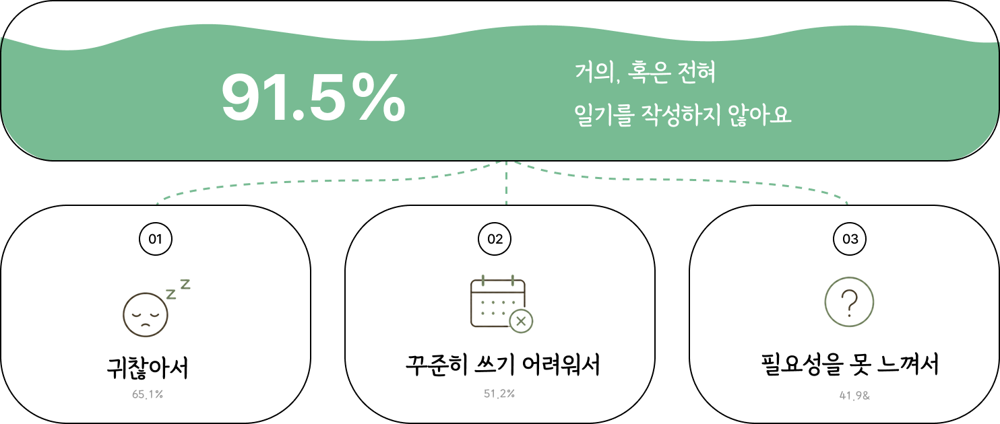
Solution
각종 문제에도 어려움 없이,
Draw Diary 와 함께 나아가요 :)
지속성 문제
작심삼일은 이제 그만!
몇 번의 선택만으로 일기가
완성되도록 도와줄게요
일기를 짧고 즐겁게,
꾸준한 기록 습관을 형성해요.
시간 부족
바쁜 일상 속에서도
30초면 충분해요.
빠르고 간편하게 기록해요.
짧은 시간으로 부담 없이
매일 기록 가능해요.
기록의 진입장벽
무엇을 써야 할지 고민 끝!
질문과 가이드로
쉽게 시작할 수 있어요.
질문 가이드로 쉽게 시작하고
부담없이 기록할 수 있어요.
기록 방식 변화
글 대신 그림으로
나만의 방식으로
마음과 순간을 담아요.
그림으로 표현하는 자유,
나만의 감성으로 기록해요.
Scenario
일기작성 후
캘린더, 일기 분석, 나의 프로필 등을 확인할 수 있어요.
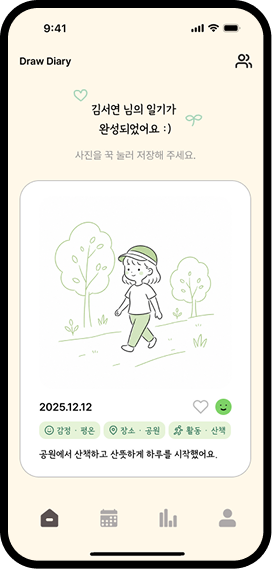
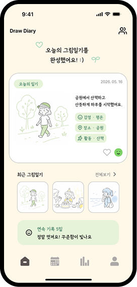
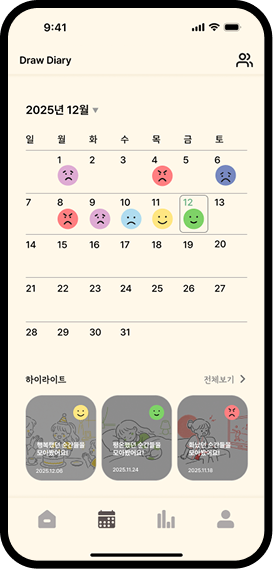
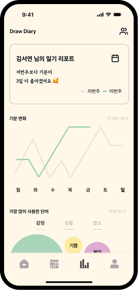
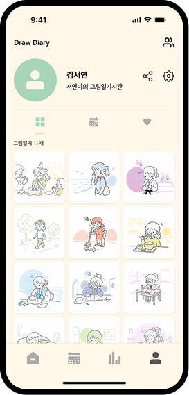
일기완성
홈
캘린더
분석
프로필
선택지형
그림 일기 제작
적을 필요 없이 단 30초만 있으면 돼요.
오늘의 장소, 행동, 기분을 알려주세요.
그림은 Draw Diary가 그려요.
사용자 분석, 캘린더,
하이라이트 기능까지
적은 일기가 쌓이고 쌓여서 내 감정 분석에
도움이 돼요. 또 달력과 하이라이트를 보며
추억을 다시 되돌아 볼 수 있어요.
일기도 게임처럼,
캐릭터도 맞춤형
매일 일기를 적을수록 새로운 소품이 생겨요.
생긴 소품으로 캐릭터를 꾸미고 나만의 캐릭터를
그림 일기에 등장 시켜 보세요.
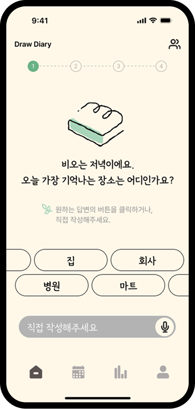
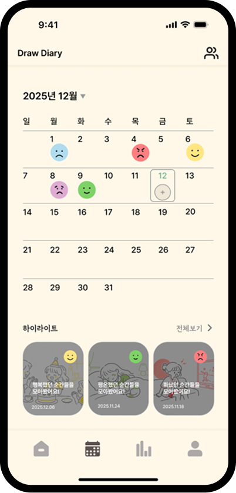
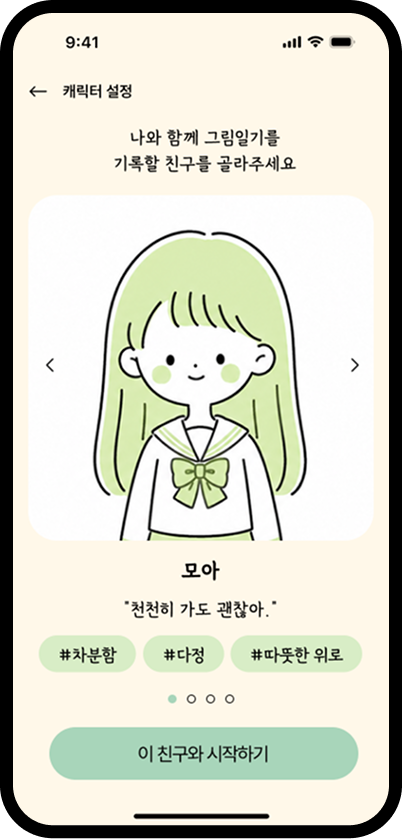
Benefit
일기가 쌓이면 나만의 무드 있는
다이어리를 얻을 수 있어요.

쉬운 온보딩으로
알아갈 수 있어요
처음 오는 분들을 위해서 쉬운 말로
Draw Diary를 소개해요.
오늘의 그림일기를 쉽게 그려보아요.
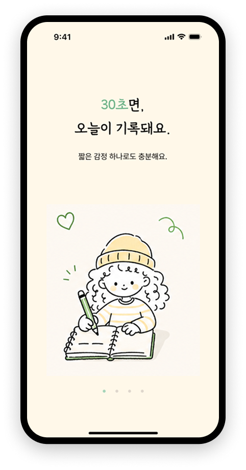
나만의 프라이빗
아이디로 친구 추가
Draw Diary에서 주어진 비밀 아이디로
검색하면, 친구 추가를 할 수 있어요.
이제 서로의 그림일기를 공유해 보아요.
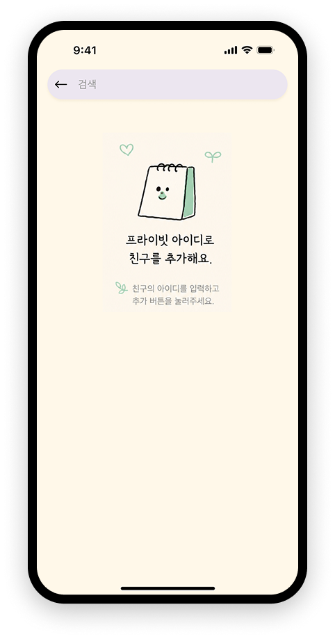
나의 이야기로
꾸며진 내 프로필
기록한 일기가 쌓이고 쌓여서 색다르고
예쁜 그림일기 피드가 만들어져요.
그림만으로도 추억을 되돌아볼 수 있어요.
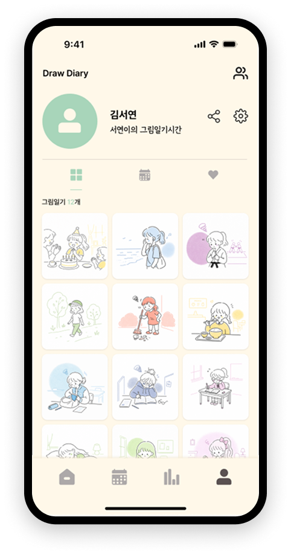
일상을 그림으로
바꾸는 30초,
Draw Diary
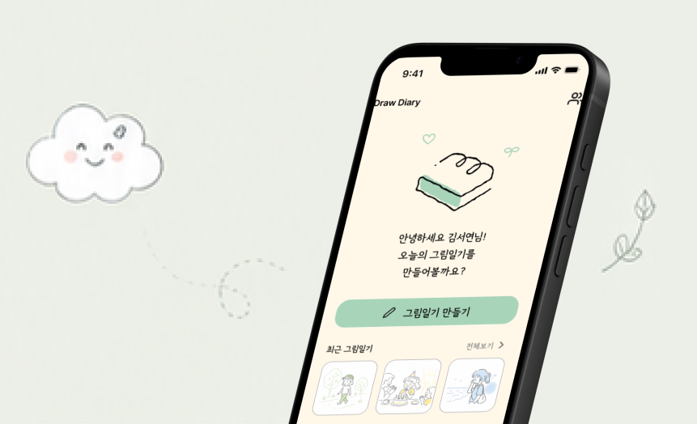